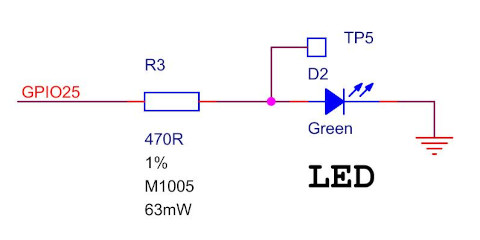
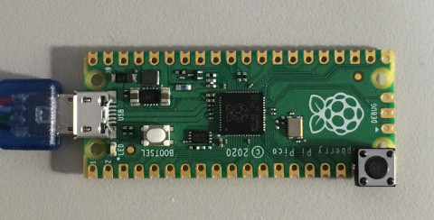
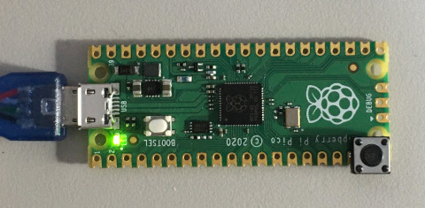

Steward
分享是一種喜悅、更是一種幸福
微處理器 - Raspberry Pi RP2040 (Pico) - C/C++ - LED
參考資訊：
https://www.digikey.com/en/maker/projects/raspberry-pi-pico-and-rp2040-cc-part-1-blink-and-vs-code/7102fb8bca95452e9df6150f39ae8422
LED腳位

main.c
#include <stdio.h>
#include "pico/stdlib.h"
#define LED 25
void main(void)
{
gpio_init(LED);
gpio_set_dir(LED, GPIO_OUT);
while (1) {
gpio_put(LED, true);
sleep_ms(1000);
gpio_put(LED, false);
sleep_ms(1000);
}
}
CMakeLists.txt
cmake_minimum_required(VERSION 3.12)
include($ENV{PICO_SDK_PATH}/external/pico_sdk_import.cmake)
project(blink C CXX ASM)
set(CMAKE_C_STANDARD 11)
set(CMAKE_CXX_STANDARD 17)
pico_sdk_init()
add_executable(${PROJECT_NAME}
main.c
)
pico_add_extra_outputs(${PROJECT_NAME})
target_link_libraries(${PROJECT_NAME}
pico_stdlib
)
pico_enable_stdio_usb(${PROJECT_NAME} 1)
pico_enable_stdio_uart(${PROJECT_NAME} 0)
編譯
$ export PICO_SDK_PATH=/opt/pico-sdk $ cmake . $ make
按住BOOTSEL後，連接USB到電腦，然後把blink.uf2複製到RP2隨身碟即可完成燒錄

